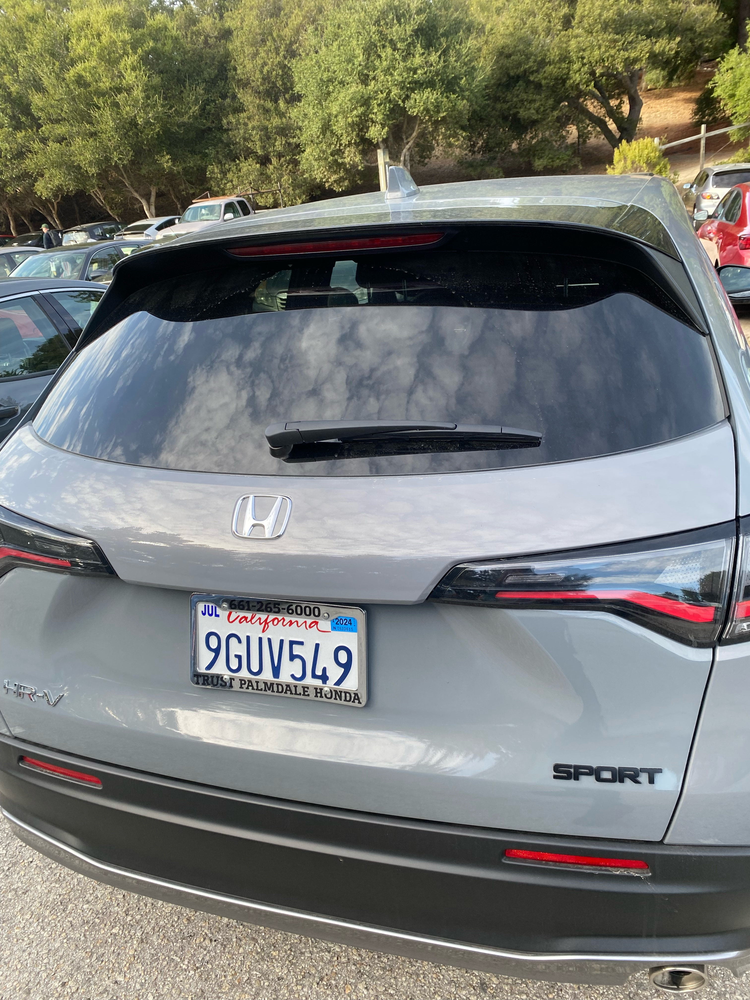
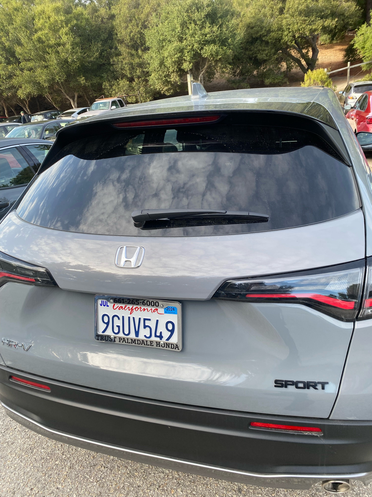

Lab 6: Arrays and Objects
Challenge
To experiment with JavaScript arrays and objects to explain our methods of transportations
Problems
One issue was that putting in the age variable for the myMainRide object we didn't put it as a untitled function. Which blocked the whole script from linking to HTML for some reason. But we were able to fix with the help of our TA, by adding the untitled function stated in canvas.
Reflection
This lab was fairly tedious just getting on getting on thing wrong messes up the whole program and it takes time to fix it. So this lab wasn't too hard but it felt annoying because of some mistakes.
Results
Script Output
 
